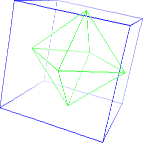
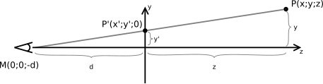

Adventi naptár
Czirkos Zoltán · 2019.02.27.
Háromdimenziós grafika – forgatás és perspektíva
Eddig az összes grafikus program az adventi naptárban kétdimenziós grafikával dolgozott. Minden kirajzolt dolog egy síkon volt, a monitor síkján. A repülős játéknál kicsit foglalkozni kellett a magasságokkal (hogy ne úgy rajzolja ki a program a repülőket, mintha a fák alatt mennének el), de a repülők abban sem térben mozogtak – nem tároltuk el igazából azok magasságát.
Három dimenzióban viszont ezt megtesszük. Itt minden tárgynak három koordinátája van,
x, y, és z. Viszont a monitorunk továbbra is kétdimenziós, úgyhogy a
látott képet valahogy ki kell lapítani, leképezni azt a monitor síkjára, pontosan úgy, mint amikor
egy fényképet készítünk. Ehhez nem elég simán csak eldobni a z, mélység koordinátát, hanem
valamiféle számításokat kell végezni. Minél messzebb van egy tárgy, annál kisebbnek kell látszódjon.
Az ehhez tartozó számítás, amelynek neve vetítés (perspektivikus leképezés), meglepően egyszerű.
A mai program nem lesz OpenGL-es, és a 3D kirajzolást nem a grafikus kártya fogja elvégezni, hanem maradunk az SDL-nél, és a „kézzel” számolásnál. Így látszani fog, mi hogyan történik. A végeredmény: egy program, amely szabályos testeket rajzol ki és forgat – vagyis inkább bármit, mivel a kirajzolt testek adatait fájlból olvassa be.
A programban a függvénykirajzolóhoz hasonlóan két koordinátarendszert fogunk használni. A
képernyő koordinátarendszerének origója a monitor bal felső sarka, és az x tengely jobbra
mutat, az y pedig lefelé. A térbeli koordinátarendszer origója ezzel szemben középen van;
az x irány a vízszintes, és jobbra nő, az y a függőleges, és felfelé nő, a z
tengely pedig a mélységet jelenti. Leképezéskor ez átdöfi a monitot. A nagyobb z
koordinátájú tárgyak távolabb vannak.
Az első és legfontosabb kérdés az, hogyan lesz a háromdimenziós koordinátákból kétdimenziós képkoordináta. Ez a leképezés meglepően egyszerű. 
Ezen a rajzon a P(x;y;z) pont van a háromdimenziós térben; ennek a helyét, P'(x';y')-t
keressük a vetítési síkon (monitoron :)). A monitor a z=0 síknak felel meg, amit most
oldalról nézzük, és egybeesik a rajzon az y tengellyel. A néző a kép bal szélén van, az M
pontban, d távolságra a monitortól. A P' pont helyét a P és M pontok közötti szakasz és a
sík metszete határozza meg. Ezt a szakaszt berajzolva a metszéspontonkívül kapunk két hasonló,
derékszökű háromszöget. Ezen derékszögű háromszögek befogói d és y', továbbá
d+z és y. A hasonlóság miatt a d/y'=(d+z)/y egyenletet írhatjuk fel. Ebből
y'-t kifejezve y'=d·y/(d+z) adódik – és már kész is vagyunk. A vetítés
lényegében egy osztásból áll, ami szemlélet szerint helyes is: minél távolabb van valami, annál kisebb lesz.
Az x' koordináta ugyanígy számítható:
xk = +d * x/(z + d) + screen->w/2;
yk = -d * y/(z + d) + screen->h/2;Az yk -1-es szorzója azért kell, mert eltérő a függőleges tengelyek iránya a
térben és a monitoron, a w/2 és a h/2 pedig a képernyő közepét adják.
A programban a forgatott testek az origó körül lesznek, mivel az
akörüli forgatást könnyű leírni matematikailag. A vetítési sík pedig
a z=0 sík, ahogy a rajzon is – tehát az origó helye a
monitor közepe. A d távolsággal azt adjuk meg, hogy
milyen messze vagyunk ettől a vetítési síktól. Nagy távolság esetén
nem nagyon számít a vetített pontok eredeti z
koordinátája a hányadosban hozzáadott nagy d miatt. Ha
közel megyünk a síkhoz, akkor viszont d kicsi, és a
pontok vetített helyzetét erősen befolyásolja a z
koordinátájuk. Az alábbi rajzok egy 200 egység oldalhosszúságú kockát
mutatnak különböző távolságokból:
d = 300
d = 600
d = 1200
Az első rajzon annyira közel van a kocka a szemünkhöz, hogy az első lapja elfed minden mást; a harmadik rajzon pedig olyan távol, hogy a leképezésen már majdnem teljesen párhuzamosak azok a vonalak, amelyek térben is azok. Az elsőn szinte kiböki a szemünket, a harmadikon meg messziről nézzük, távcsővel.
Forgassunk el egy P(x;y) pontot az origó körül! Ha a forgatás szöge β, akkor az alábbi egyenleteket írhatjuk fel (α és r a pont eredeti helyzetét határozzák meg):
x = r·cosα y = r·sinα x' = r·cos(α+β) y' = r·sin(α+β)
Behelyettesítve cos(α+β)-t és sin(α+β)-t az ismert összefüggések alapján:
x' = r·(cosα·cosβ-sinα·sinβ) = r·cosα·cosβ-r·sinα·sinβ = x·cosβ - y·sinβ y' = r·(sinα·cosβ+cosα·sinβ) = r·sinα·cosβ+r·cosα·sinβ = x·sinβ + y·cosβ
Vagyis az elforgatott pont koordinátái könnyen kifejezhetők az eredeti koordinátákból és
a forgatás szögének megfelelő sinβ, cosβ függvényértékekből. Egy
síkon ez az egyetlen egy fajta forgatás lehetséges, a térben viszont többféle, mert forgathatunk
mind a három tengely körül. A z tengely körüli forgatást éppen a fenti képlet írja le,
mert olyankor z'=z. Az x és az y tengely körüli forgatásnál rendre az
x és y koordináták maradnak változatlanul, míg a másik kettő a fenti képlethez
hasonlóan számolható. A három tengely körüli forgatást billentésnek (pitch), fordulásnak (yaw)
és csavarásnak (roll) is szoktuk nevezni.
A térben forgatásnál egy dologra kell figyelni, nevezetesen arra, hogy a három forgatás
sorrendje számít: nem mindegy, hogy valamit előbb az x, utána az y tengely körül
forgatunk el, vagy fordítva. Ezt mindenki könnyedén kipróbálhatja magának egy dobókockával.
Eljött a programozás ideje. Jobb oldalt egy ikozaéder látható. Ennek a térbeli koordinátáit kellene tárolnunk; ezt kellene forgatnunk és kirajzolnunk a képernyőre.
Van egy nagyon fontos megfigyelés, amit tehetünk itt, mégpedig az, hogy ennek minden csúcsából öt él indul ki. Ezt általánosságban is megfigyelhetjük, hogy bármelyik poliédernek (sík lapokkal határolt testnek) minden csúcsából legalább három él indul ki. Ha a jobb oldalihoz hasonló drótvázat kell kirajzolni, azaz az éleket, akkor nem érdemes minden élhez eltárolni azok koordinátáit. Ha így tennénk, akkor egy ikozaéder esetén minden csúcson ötször végeznénk el a forgatást és a vetítést. Érdemes tehát a csúcsokat külön eltárolni, és az éleknél pedig csak azt az információt rögzíteni, hogy melyik két csúcsot köti össze.
Definiáljuk az alábbi bemeneti fájlformátumot a programhoz:
; komment, ami pontosvesszővel kezdődik, vagy üres sor ; a p-vel kezdődő sorok csúcsokat határoznak meg. ; az első szám a pont sorszáma, a többi három pedig az x,y,z koordináta (valós) p 1 -100 100 -100 p 2 100 100 -100 p 3 100 -100 -100 p 4 -100 -100 -100 ; az l-es sorok egy élt adnak meg. az első szám egy színkód (egész), ; a másik kettő pedig a két összekötendő pont l 1 1 2 l 1 2 3 l 1 3 4 l 1 4 1 ; az s-es sor egy szöveg, ami megjelenik a képen. ; az első két szám a képernyőkoordináta, a harmadik a színkód. ; utána sor végéig a megjelenítendő szöveg. s 10 10 1 Negyzet
Definiáljuk az alábbi adatszerkezetet! Legalapvetőbb építőkő a Pont.
Ez tárolja egy pont fájlból beolvasott, térbeli koordinátáit (x, y, z), és a sorszámát (hanyadik).
Ezen kívül eltárolja a forgatás során előálló új térbeli koordinátákat (xf, yf, zf), és a vetítéssel
kapott képernyőkoordinátákat (xk, yk). A láncolt lista építéséhez pedig egy pointert:
typedef struct Pont {
double x, y, z; /* eredeti 3d koordináta */
int hanyadik; /* fájlbeli sorszám */
double xf, yf, zf; /* forgatott 3d koordináta */
int xk, yk; /* képernyőn koordináta */
struct Pont *kov;
} Pont;Egy élt a Vonal nevű struktúrában tárolunk. Ez tárolja a két hivatkozott pont
sorszámot, és tárol két pointert is a két összekötött pontra. Ezek közül elvileg csak az egyik
párosra lenne szükség, de kényelmes, ha megvan mind a kettő. A fájl a sorszámokkal hivatkozik a
pontokra, de a teljes bemenet beolvasása után a program minden élhez megkeresi a két összekötött
pontot a pontok láncolt listájából, hogy ne kelljen újra és újra elvégezni ezt a műveletet. Mivel
a forgatás közben az nem változik, hogy melyik él mely csúcsokat köti össze, ezért ez megtehető:
typedef struct Vonal {
int pi1, pi2; /* pontok indexe, amit osszekot */
Pont *p1, *p2; /* pointer rájuk, hogy ne kelljen mindig megkeresni */
int szin; /* színkód a fenti tömbből */
struct Vonal *kov;
} Vonal;A feliratot tároló Szoveg struktúra sok magyarázatot nem igényel:
typedef struct Szoveg {
char felirat[100]; /* felirat szövege */
int x, y, szin; /* pozíció és szín */
struct Szoveg *kov;
} Szoveg;Ahogyan a Rajz struktúra sem: egy rajz pontokból, azokat összekötő vonalakból
és feliratokból áll. A latszik[] tömb öt darab logikai értéket tárol: a rajzon
a különböző élek a programban ki-be kapcsolhatók. Ennek célja érthető lesz a program kipróbálásakor.
typedef struct Rajz {
Pont *pontok;
Vonal *vonalak;
Szoveg *szovegek;
bool latszik[5]; /* melyik színű vonalak látszanak épp */
} Rajz;A fentiek után a program működése különösebb magyarázatot nem igényel. A függvények az alábbiak:
bool beolvas(char const *fajlnev, Rajz *rajz): beolvassa a megadott nevű fájlt az addig inicializálatlanRajzstruktúrába. Hamissal tér vissza hiba esetén. (Ez a kód megmutatja, hogyan szokás használni az utasításblokkokat a változók láthatóságának korlátozására. Ezen kívül mutat egy-kétscanf()-es trükköt.) Az adatok beolvasása után végigmegy a vonalak listáján, és mindegyik vonalnak megkeresi a két végpontját, hogy később már ne kelljen ezzel foglalkoznia a kirajzoló függvénynek.void forgat_es_vetit(SDL_Surface *screen, Rajz *rajz, double szog, double d): ez a függvény végzi el a fent részletezett matematikai műveleteket, a három tengely körüli forgatást és a vetítési transzformációt. Az egyes pontokxk,ykadattagjait módosítja, amelyeket avoid kirajzol(SDL_Surface *screen, Rajz const *rajz)függvény használ majd fel.
A program futása közben az 1, 2, 3, 4 gombokkal lehet ki- és bekapcsolni az egyes
éleket, szín szerint. A 0-s gomb az élek sorszámait kapcsolja ki-be (ez jól jön akkor,
amikor egy bemeneti fájlt vizsgálunk). A fel és le nyilakkal pedig közelebbről vagy
távolabbról lehet nézni a forgatott testet. d=200-nál közelebb nem lehet menni hozzá, mivel
akkor egyes pontok már a megfigyelő mögött lennének. Olyankor pedig z<0 miatt a vetítés
képlete hibás eredményt ad!
Az advent18-drot.zip-ben található néhány adatfájl is.
Ezekben az összes szabályos test szerepel, és
a szövegek megmutatják azt is, hogy mi közöttük a kapcsolat. A beolvasott adatfájl nevét a main()
függvény legelején lehet beállítani, vagy az első parancssori paraméterrel.
Három ötlet a továbbfejlesztésre:
- Akinek van kék-piros vagy kék-sárga 3D szemüvege, megcsinálhatja, hogy minden képre kétszer rajzolja ki az éleket, egymáshoz képest kicsit eltolva vízszintesen a pontokat.
- A távolabbi éleket halványabb színnel kirajzolva a 3D hatás erősíthető, hasonlóan, mint fent az ikozaéder
képénél. (Ehhez az él színének megválasztásánál figyelembe kell venni a forgatás utáni
zkoordinátát. A szakaszokat fel kell bontani kis darabokra, mivel az SDL_gfxlineColor()függvénye csak konstans színnel tud rajzolni.) - Az élek tárolása helyett lapokat tárolni, vagyis azokat a sokszögeket, amelyek
a poliédert határolják. A vonalak láncolt listája helyébe ilyenkor a lapok láncolt listája lép. Egy laphoz
egy dinamikus tömb tartozhat, mivel a lapok csúcsszáma eltérő lehet – de a csúcsok ugyanígy egy pontra hivatkozásként
jelenhetnek meg, mint most. A Science U oldalán
lehet olyan adatfájlokat találni, amelyekben a lapok adatai is szerepelnek. Az SDL_gfx
filledPolygonColor()függvénye nem csak teljesen átlátszatlan (FF-re végződő), hanem félig átlátszó színeket is kaphat, így olyan testeket lehet rajzolni, amelyeket üveglapok építenek fel: mint például ezen a Wikipedia oldalon.
A félszabályos testek koordinátái a Science U oldalról származnak.